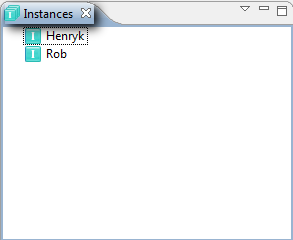
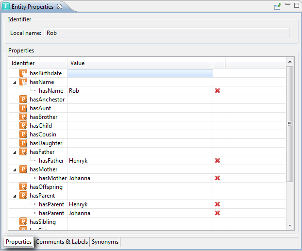
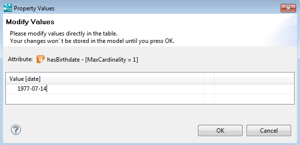

|

|
|
Instances |
|
|
|
|
Instances |
When you select a class all its instances are displayed in the Instances view:

Instances can be created, renamed and deleted in this component.
To define a new instance, choose a class, make a right mouse click on it and select New Instance. A new instance will be displayed, with a randomly generated name, e.g.: instance1106663037379, which can be changed by the user.
Instances can be easily moved by dragging them to another class or by selecting Refactor>Move from the context menu.
Entity Properties of instances
If an instance is selected, the properties of the instance are shown in the Entity Properties.

| • | Local name: The name of the class. |
| • | Properties: Shows the identifier of the instance and a table containing the attribute and relation values. In the first column the identifier of the property is shown and in the second column the attribute values or related instances are shown. You can see that attributes are preceded by an icon and relations by an icon. |
You can also see that the attributes and relations are represented by trees:
| • | The root elements are the identifiers of the attributes/relations |
| • | The property values are displayed as subelements (one row per value). |
To change any of the properties, click on its cell in the Value column and a dialog box appears:

If you are editing a relation, click on CTRL+SPACE and a list of the available instances will be displayed. You can add the proposed instances of the Value column either by double-clicking on them or selecting them with the arrow keys on your keyboard and pressing Enter. If you start typing in the cell, the available instances will be filtered.
If you want to edit an attribute, just select the Value cell and type in the attribute value. Click on OK to save the modified or added values.
Cardinalities
If the property value was modeled with the cardinality 1, then the Value table will contain only one row, so only one value can be stored. If the cardinality is anything greater than 1, you can enter as many values as like. The exact amount will not be checked.
Datatypes
When you try to enter a value with the wrong data type (for example, you try to enter letters whereas the data type of the attribute is "number"), a message with the problem will be displayed and nothing will be written in the field.
If you have to enter a value for an attribute of the "dateTime" type, a message with help instructions will appear next to the field:
You can see that there are three possibilities of writing a dateTime value:
| • | <year>-<month>-<day>T<hour>:<minute>:<second>, e.g. 1820-04-25T12:30:00 |
| • | <year>-<month>-<day>T<hour>:<minute>:<second>+<hour>:<minute>, e.g. 1820-04-25T12:30:00+03:15 |
| • | <year>-<month>-<day>T<hour>:<minute>:<second>-<hour>:<minute>, e.g. 1820-04-25T12:30:00-03:15 |
In case of the two last ones, the "+<hour>:<minute>" and "-<hour>:<minute>" represent the time zone.
Modifications
In order to modify the entered value, you can either delete it with the red cross in the Value table and enter a new one or click on this value and modify it directly in the field. When you click on OK, the old value will be replaced by the new one.
If an instance contains values for a property that is not defined in the schema, the values will be displayed with an error icon. If you try to modify them a warning message will be displayed, informing that this attribute does not exist anymore and the values cannot be modified.
This can happen if you remove a relation/attribute and don't set the checkmark that instance values should be deleted as well.